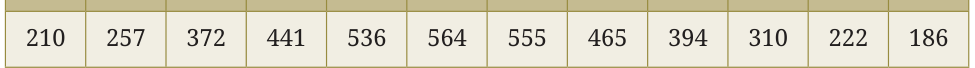
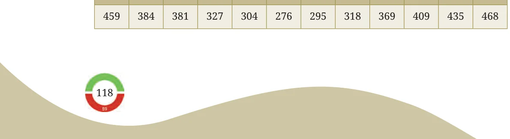
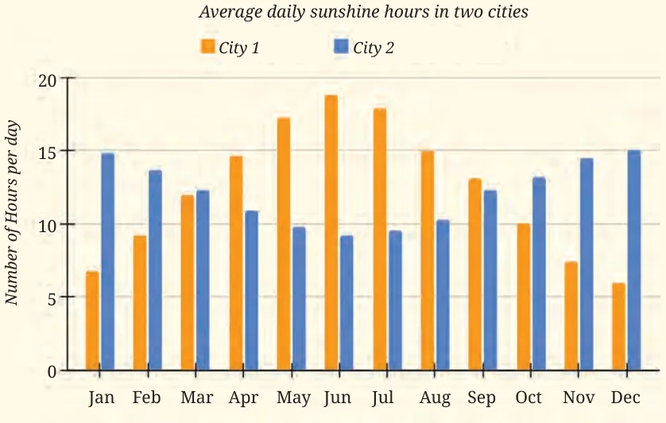

The tables below show data related to weather in two cities in different countries. The numbers given are in hours. Can you guess what the data might be related to?
\(\frac{City 1}{Jan}\)

\(\frac{City 2}{Jan}\)

The data shows the monthly hours of daylight (i.e., the Sun is at least partly above the horizon) in these two cities over the year. Based on this data, a clustered bar graph showing the average daylight hours per day in each month is given below. This average is obtained by dividing the monthly daylight hours by the number of days in the month.

Let us follow the 2-step process to identify and interpret the information presented.
Step 1: Identify what is given
Notice how the graph is organised, what scale is used, and what patterns the data shows.
- •The horizontal line shows the months of the year. The vertical
line shows the average daylight hours per day, using the scale 1 unit \(= 5\) hours. The month of June has the maximum value for City 1 and the minimum value for City 2.
Step 2: Infer from what is given
Analyse and interpret each of your observations. Share appropriate summary and conclusion statements.
- •The average number of daylight hours per day in City 1 increases
from January, reaching a maximum of about \(17 - 18\) hours in June. It then decreases, reaching a minimum of about 6 hours in December.
- •The average number of daylight hours per day in City 2 decreases
from January, reaching a minimum of about 9 hours in June. It then increases, reaching a maximum of about 15 hours in December.
- •The maximum and minimum values in City 1 are more extreme than
those of City 2. That is, the maximum number of daylight hours per day of City 1 is more than that of City 2, and the minimum number of daylight hours per day of City 1 is less than that of City 2.
- •In June, City 1 experiences daylight for about \(\frac{3}{4}\) th of the full day (24
hours), whereas during December - January, it only experiences daylight for about \(\frac{1}{4}\) th of the full day. Does this give some idea of where these two cities are located? City 1 and City 2 are located away from the Equator in the Northern and Southern hemispheres, respectively. City 1 is Helsinki, Finland, and City 2 is Wellington, New Zealand. These are also shown on the map. In June, the Northern Hemisphere is tilted towards the Sun, resulting in longer daylight hours; it is summertime here. Meanwhile, the Southern Hemisphere is tilted away from the Sun, leading to shorter days; it is winter time here. The inverted seasonal daylight pattern is due to the cities’ location in opposite hemispheres. The large variation in the data is because they are away from the Equator.
Is there anything more that you wish to explore? Math Talk
I got to know that Very interesting! during summer If we are there at near the poles one that time, we can can see the Sun go sightseeing even even at midnight!! at midnight!
©timeanddate.com/Brendan Goodenough
The Midnight Sun at Andøya, Norway.